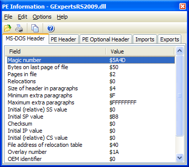

PE Information |
|
The PE Information expert enables you to examine the contents of a Portable Executable (PE) file. Almost all Win32 EXEs and DLLs are PE format files. Many other files are also PE files, such as Borland/CodeGear packages (DPL/BPL), Active X controls (OCX), etc. This expert supports IDE docking and drag and drop of files from Windows Explorer.  To view the contents of a PE format file, click the Open button and select the file or drag and drop a file from your file manager. There are five tabs in the expert as follows:
•MS-DOS Header: All windows programs contain the MS-DOS header, sometimes referred to as the MS-DOS stub.
•PE Header: The portable executable header contains data such as what machine the binary is targeted for (Intel 0x86, AMD x64, Alpha, MIPS, etc.).
•PE Optional Header: Contrary to its name, this header is required in PE files. It contains information regarding the subsystem required, the version number of the OS required, etc.
•Imports: This section contains a list of all files required by this file to run, including Borland packages. Selecting a file will cause a list of all functions imported from the selected file to appear.
•Exports: Exported functions are the ones that are made publicly available for other applications call. This tab is mostly of use when examining DLLs or packages.
Note: This tool can detect 64-bit binaries, but will not be able to read all of the data from them (imports, exports, etc.).
|